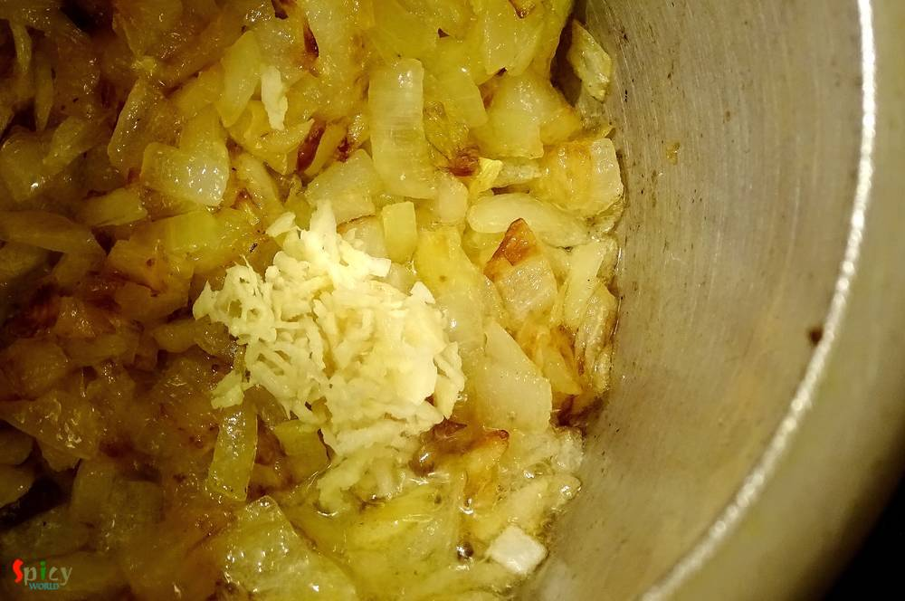
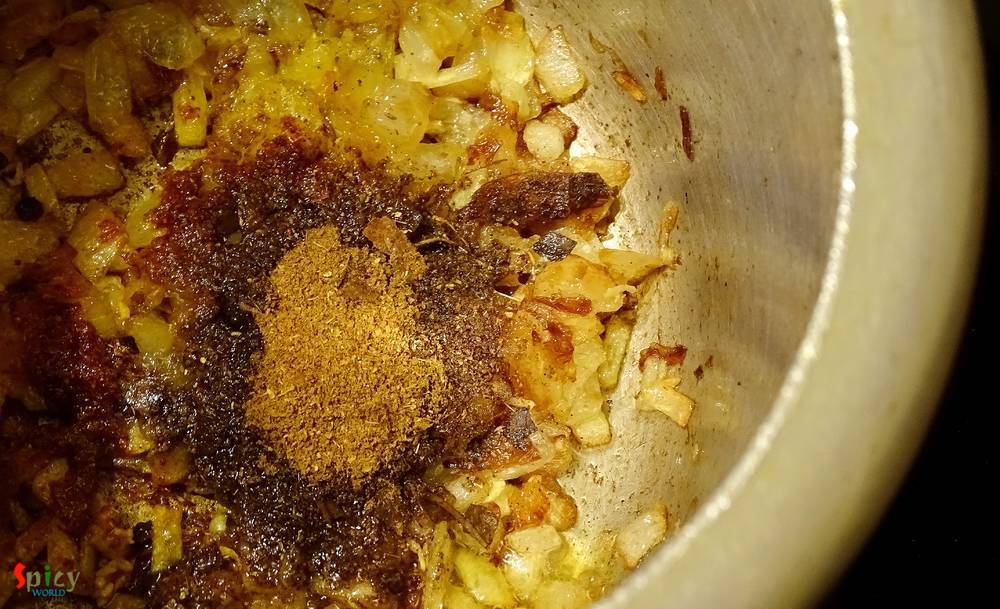
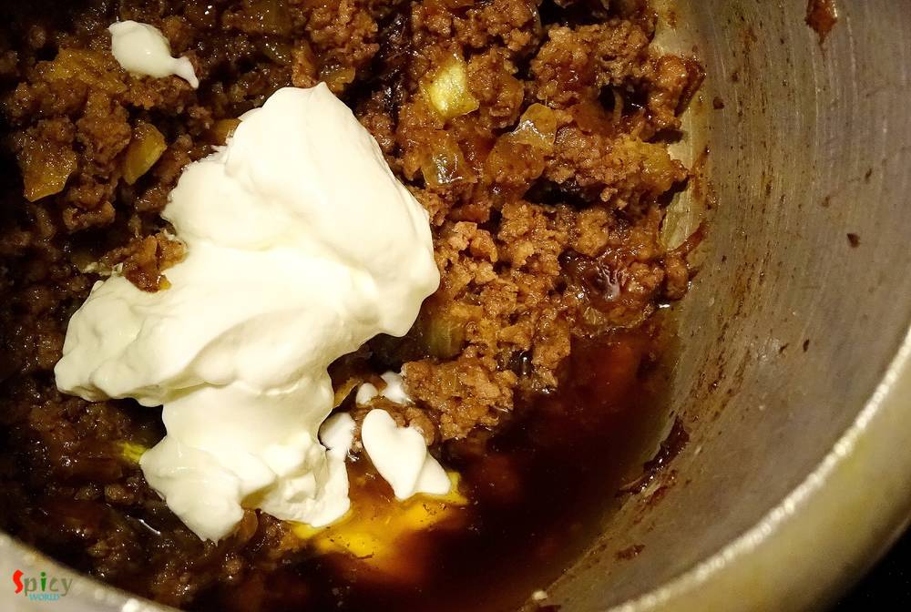
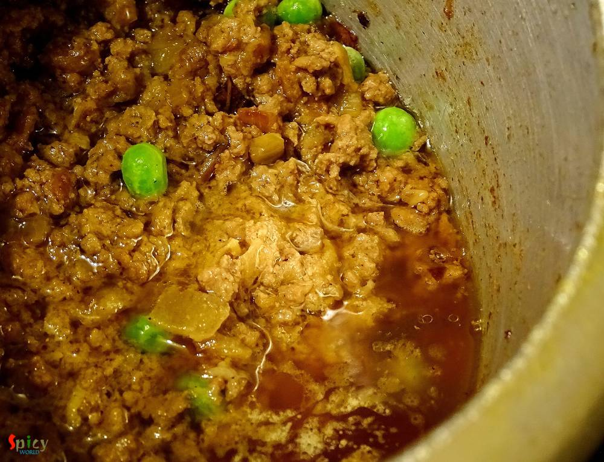
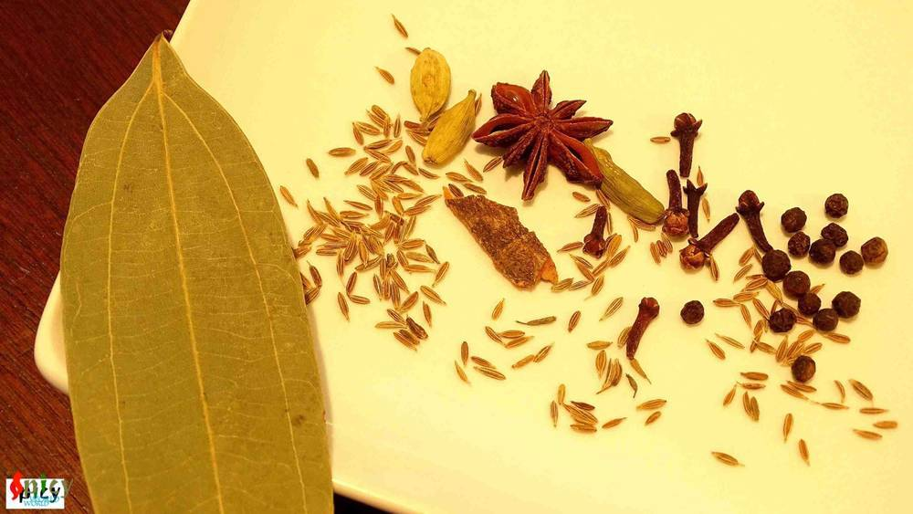
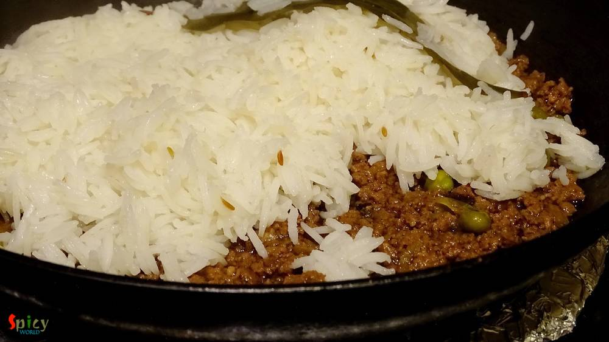
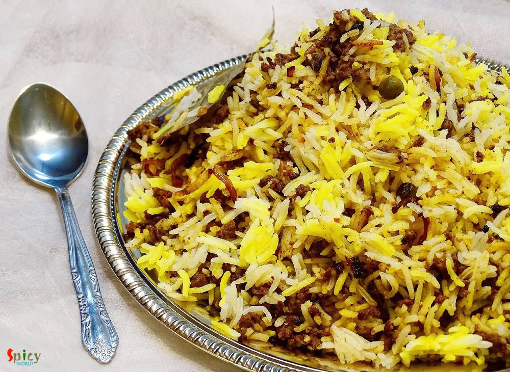

Simple and Easy Recipes
Mutton Keema Biriyani / Minced meat Biriyani
© 2016 Spicy World, Published on: Mar 31, 2016
In India "biriyani" is a very popular dish and we both are crazy about any type of 'biriyani'. You can find plenty of variations in biriyani. The process is a little bit of lengthy but the result is unbelievable. Last friday I took an attempt on making Keema Biriyani, after the entire process I realized it is the easiest one. That is why I am sharing this recipe with you because it is one of the tastiest and easiest biriyani ever. Try this at your home and enjoy a lovely dinner.

Ingredients
- 1 lb / 500 gm of minced mutton.
- Basmati rice 2 cups.
- 1 onion finely chopped.
- 1 Teaspoon of ginger and garlic paste.
- 3 Tablespoons of yogurt.
- 3 Teaspoons of biriyani masala.
- Whole spices (cumin seeds 1 Teaspoon, 5 green cardamom, 6 cloves, 1 star anise, 1 small cinnamon stick, few black peppercorns, 1 bay leaf).
- 2 Tablespoons of saffron soaked milk.
- A handful of chopped mint and coriander leaves.
- 2 Teaspoons of clarified butter/ghee.
- Few drops of kewra water / rose water.
- Salt and sugar.
- Water.
- 1 Teaspoon of red chilli powder.
- 3 Tablespoons of white oil.
- Some fried onion.
- A handful of green peas.


Steps
Wash the basmati rice in cold water very well and soak this for 30 minutes.
Take a cooker. Heat oil.
Add chopped onion in hot oil and fry it till golden.
Then add ginger and garlic paste. Mix it for 3 minutes.
Now add biriyani masala, red chilli powder. Mix this very well.
Then add the minced mutton and some salt. Mix this very well.
Add the curd. Mix it very well.
Add some water, green peas, pinch of sugar and cook this till two whistles. Keep some gravy in the curry.
Now take another vessel. Boil lots of water.
Add 2 Tablespoons of salt and whole spices in boiling water. Let them boil for 2 minutes.
Then add the soaked rice.
When the rice will become 80% soft, drain all water.
Now take another pan. Put the layer of minced meat curry and then put the layer of rice.
Spread saffron soaked milk, fried onion, mint coriander leaves, ghee and kewra / rose water all over the rice.
Cover the pan with a tight lid and turn on the gas.
Keep the gas on high flame first for 4 minutes, then bring it low for another 15 minutes.
Let it rest for 10 minutes then open the lid.
Your mutton keema biriyani is ready ...
Enjoy this hot with raita or any type of gravy ...
")